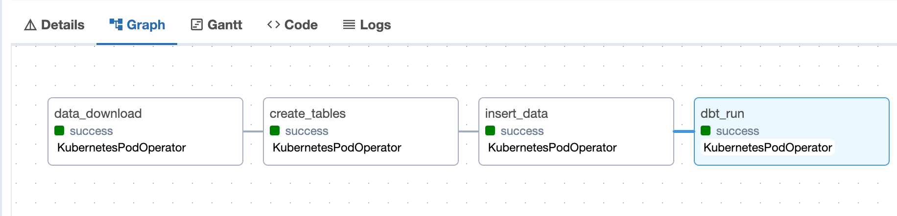

Data Engineering Workspaces
On this page, we'll explain what workspaces in the context of HelloDATA-BE are and how to use them, and you'll create your own based on a prepared starter repo.
Info
Also see the step-by-step video we created that might help you further.
What is a Workspace?
Within the context of HelloDATA-BE, data, engineers, or technical people can develop their dbt, airflow, or even bring their tool, all packed into a separate git-repo and run as part of HelloDATA-BE where they enjoy the benefits of persistent storage, visualization tools, user management, monitoring, etc.
graph TD
subgraph "Business Domain (Tenant)"
BD[Business Domain]
BD -->|Services| SR1[Portal]
BD -->|Services| SR2[Orchestration]
BD -->|Services| SR3[Lineage]
BD -->|Services| SR5[Database Manager]
BD -->|Services| SR4[Monitoring & Logging]
end
subgraph "Workspaces"
WS[Workspaces] -->|git-repo| DE[Data Engineering]
WS[Workspaces] -->|git-repo| ML[ML Team]
WS[Workspaces] -->|git-repo| DA[Product Analysts]
WS[Workspaces] -->|git-repo| NN[...]
end
subgraph "Data Domain (1-n)"
DD[Data Domain] -->|Persistent Storage| PG[Postgres]
DD[Data Domain] -->|Data Modeling| DBT[dbt]
DD[Data Domain] -->|Visualization| SU[Superset]
end
BD -->|Contains 1-n| DD
DD -->|n-instances| WS
%% Colors
class BD business
class DD data
class WS workspace
class SS,PGA subsystem
class SR1,SR2,SR3,SR4 services
classDef business fill:#96CD70,stroke:#333,stroke-width:2px;
classDef data fill:#A898D8,stroke:#333,stroke-width:2px;
classDef workspace fill:#70AFFD,stroke:#333,stroke-width:2px;
%% classDef subsystem fill:#F1C40F,stroke:#333,stroke-width:2px;
%% classDef services fill:#E74C3C,stroke:#333,stroke-width:1px;A workspace can have n-instances within a data domain. What does it mean? Each team can deal with its requirements to develop and build their project independently.
Think of an ML engineer who needs heavy tools such as Tensorflow, etc., as an analyst might build simple dbt models. In contrast, another data engineer uses a specific tool from the Modern Data Stack.
When to use Workspaces
Workspaces are best used for development, implementing custom business logic, and modeling your data. But there is no limit to what you build as long as it can be run as a DAG as an Airflow data pipeline.
Generally speaking, a workspace is used whenever someone needs to create a custom logic yet to be integrated within the HelloDATA BE Platform.
As a second step - imagine you implemented a critical business transformation everyone needs - that code and DAG could be moved and be a default DAG within a data domain. But the development always happens within the workspace, enabling self-serve.
Without workspaces, every request would need to go over the HelloDATA BE Project team. Data engineers need a straightforward way isolated from deployment where they can add custom code for their specific data domain pipelines.
How does a Workspace work?
When you create your workspace, it will be deployed within HelloDATA-BE and run by an Airflow DAG. The Airflow DAG is the integration into HD. You'll define things like how often it runs, what it should run, the order of it, etc.
Below, you see an example of two different Airflow DAGs deployed from two different Workspaces (marked red arrow):

How do I create my own Workspace?
To implement your own Workspace, we created a hellodata-be-workspace-starter. This repo contains a minimal set of artefacts in order to be deployed on HD.
Pre-requisites
- Install latest Docker Desktop
- Activate Kubernetes feature in Docker Desktop (needed to run Airflow DAG as an Docker-Image):
Settings -> Kubernetes -> Enable Kubernetes
Step-by-Step Guide
- Clone hellodata-be-workspace-starter.
- Add your own custom logic to the repo, update Dockerfile with relevant libraries and binaries you need.
- Create one or multiple Airflow DAGs for running within HelloDATA-BE.
- Build the image with
docker build -t hellodata-ws-boilerplate:0.1.0-a.1 .(or the name of choice) - Start up Airflow locally with Astro CLI (see more below) and run/test the pipeline
- Define needed ENV-Variables and deployments needs (to be set-up by HD-Team initially once)
- Push the image to a DockerHub of choice
- Ask HD Team to deploy initially
From now on whenever you have a change, you just build a new image and that will be deployed on HelloDATA-BE automatically. Making you and your team independent.
Boiler-Plate Example
Below you find an example structure that help you understand how to configure workspaces for your needs.
Boiler-Plate repo
The repo helps you to build your workspace by simply clone the whole repo and adding your changes.
We generally have these boiler plate files:
├── Dockerfile
├── Makefile
├── README.md
├── build-and-push.sh
├── deployment
│ └── deployment-needs.yaml
└── src
├── dags
│ └── airflow
│ ├── .astro
│ │ ├── config.yaml
│ ├── Dockerfile
│ ├── Makefile
│ ├── README.md
│ ├── airflow_settings.yaml
│ ├── dags
│ │ ├── .airflowignore
│ │ └── boiler-example.py
│ ├── include
│ │ └── .kube
│ │ └── config
│ ├── packages.txt
│ ├── plugins
│ ├── requirements.txt
└── duckdb
└── query_duckdb.py
Important files: Business logic (DAG)
Where as query_duckdb.py and the boiler-example.py DAG are in this case are my custom code that you'd change with your own code.
Although the Airflow DAG can be re-used as we use KubernetesPodOperator that works works within HD and locally (check more below). Essentially you change the name and the schedule to your needs, the image name and your good to go.
Example of a Airflow DAG:
from pendulum import datetime
from airflow import DAG
from airflow.configuration import conf
from airflow.providers.cncf.kubernetes.operators.kubernetes_pod import (
KubernetesPodOperator,
)
from kubernetes.client import models as k8s
import os
default_args = {
"owner": "airflow",
"depend_on_past": False,
"start_date": datetime(2021, 5, 1),
"email_on_failure": False,
"email_on_retry": False,
"retries": 1,
}
workspace_name = os.getenv("HD_WS_BOILERPLATE_NAME", "ws-boilerplate")
namespace = os.getenv("HD_NAMESPACE", "default")
# This will use .kube/config for local Astro CLI Airflow and ENV variable for k8s deployment
if namespace == "default":
config_file = "include/.kube/config" # copy your local kube file to the include folder: `cp ~/.kube/config include/.kube/config`
in_cluster = False
else:
in_cluster = True
config_file = None
with DAG(
dag_id="run_boiler_example",
schedule="@once",
default_args=default_args,
description="Boiler Plate for running a hello data workspace in airflow",
tags=[workspace_name],
) as dag:
KubernetesPodOperator(
namespace=namespace,
image="my-docker-registry.com/hellodata-ws-boilerplate:0.1.0",
image_pull_secrets=[k8s.V1LocalObjectReference("regcred")],
labels={"pod-label-test": "label-name-test"},
name="airflow-running-dagster-workspace",
task_id="run_duckdb_query",
in_cluster=in_cluster, # if set to true, will look in the cluster, if false, looks for file
cluster_context="docker-desktop", # is ignored when in_cluster is set to True
config_file=config_file,
is_delete_operator_pod=True,
get_logs=True,
# please add/overwrite your command here
cmds=["/bin/bash", "-cx"],
arguments=[
"python query_duckdb.py && echo 'Query executed successfully'", # add your command here
],
)
DAG: How to test or run a DAG locally before deploying
To run locally, the easiest way is to use the Astro CLI (see link for installation). With it, we can simply astro start or astro stop to start up/down.
For local deployment we have these requirements:
- Local Docker installed (either native or Docker-Desktop)
- make sure Kubernetes is enabled
- copy you local kube-file to astro:
cp ~/.kube/config src/dags/airflow/include/.kube/ - attention, under Windows you find that file most probably under:
C:\Users\[YourIdHere]\.kube\config - make sure docker image is available locally (for Airflow to use it) ->
docker buildmust have run (check withdocker image ls
The config file is used from astro to run on local Kubernetes. Se more infos on Run your Astro project in a local Airflow environment.
Install Requirements: Dockerfile
Below is the example how to install requirements (here duckdb) and copy my custom code src/duckdb/query_duckdb.py to the image.
Boiler-plate example:
FROM python:3.10-slim
RUN mkdir -p /opt/airflow/airflow_home/dags/
# Copy your airflow DAGs which will be copied into bussiness domain Airflow (These DAGs will be executed by Airflow)
COPY ../src/dags/airflow/dags/* /opt/airflow/airflow_home/dags/
WORKDIR /usr/src/app
RUN pip install --upgrade pip
# Install DuckDB (example - please add your own dependencies here)
RUN pip install duckdb
# Copy the script into the container
COPY src/duckdb/query_duckdb.py ./
# long-running process to keep the container running
CMD tail -f /dev/null
Deployment: deployment-needs.yaml
Below you see an an example of a deployment needs in deployment-needs.yaml, that defines:
- Docker image
- Volume mounts you need
- a command to run
- container behaviour
- extra ENV variables and values that HD-Team needs to provide for you
This part is the one that will change most likely
All of which will be eventually more automated. Also let us know or just add missing specs to the file and we'll add the functionallity on the deployment side.
spec:
initContainers:
copy-dags-to-bd:
image:
repository: my-docker-registry.com/hellodata-ws-boilerplate
pullPolicy: IfNotPresent
tag: "0.1.0"
resources: {}
volumeMounts:
- name: storage-hellodata
type: external
path: /storage
command: [ "/bin/sh","-c" ]
args: [ "mkdir -p /storage/${datadomain}/dags/${workspace}/ && rm -rf /storage/${datadomain}/dags/${workspace}/* && cp -a /opt/airflow/airflow_home/dags/*.py /storage/${datadomain}/dags/${workspace}/" ]
containers:
- name: ws-boilerplate
image: my-docker-registry.com/hellodata-ws-boilerplate:0.1.0
imagePullPolicy: Always
#needed envs for Airflow
airflow:
extraEnv: |
- name: "HD_NAMESPACE"
value: "${namespace}"
- name: "HD_WS_BOILERPLATE_NAME"
value: "dd01-ws-boilerplate"
Example with Airflow and dbt
We've added another demo dag called showcase-boiler.py which is an DAG that download data from the web (animal statistics, ~150 CSVs), postgres tables are created, data inserted and a dbt run and docs is ran at the end.

In this case we use multiple task in a DAG, these have all the same image, but you could use different one for each step. Meaning you could use Python for download, R for transformatin and Java for machine learning. But as long as images are similar, I'd suggest to use the same image.
Volumes / PVC
Another addition is the use of voulmes. These are a persistent storage also called pvs in Kubernetes, which allow to store intermediate storage outside of the container. Downloaded CSVs are stored there for the next task to pick up from that storage.
Locally you need to create such a storage once, there is a script in case you want to apply it to you local Docker-Desktop setup. Run this command:
Be sure to use the same name, in this example we use my-pvc in your DAGs as well. See in the showcase-boiler.py how the volumnes are mounted like this:
volume_claim = k8s.V1PersistentVolumeClaimVolumeSource(claim_name="my-pvc")
volume = k8s.V1Volume(name="my-volume", persistent_volume_claim=volume_claim)
volume_mount = k8s.V1VolumeMount(name="my-volume", mount_path="/mnt/pvc")
Conclusion
I hope this has illustrated how to create your own workspace. Otherwise let us know in the discussions or create an issue/PR.
Troubleshooting
If you enconter errors, we collect them in Troubleshooting.